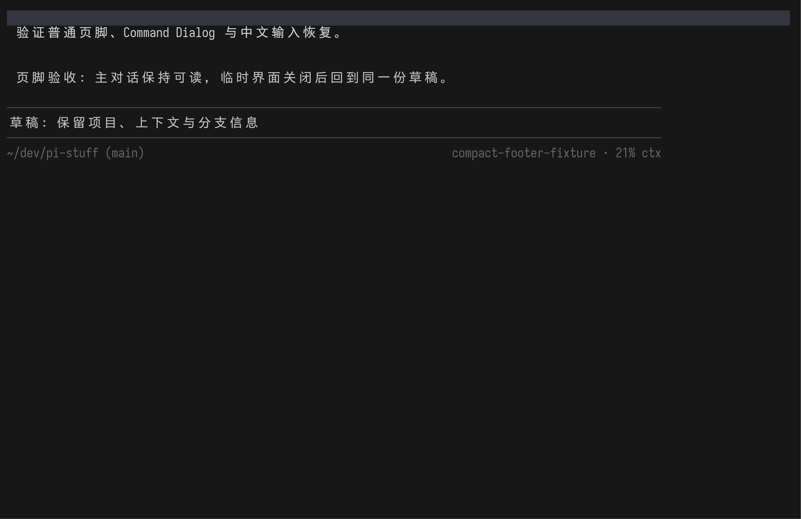
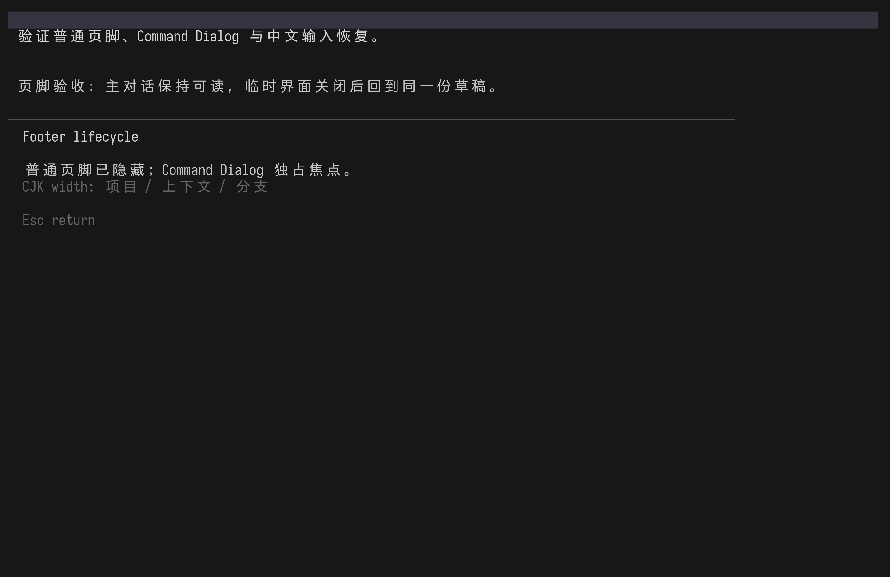
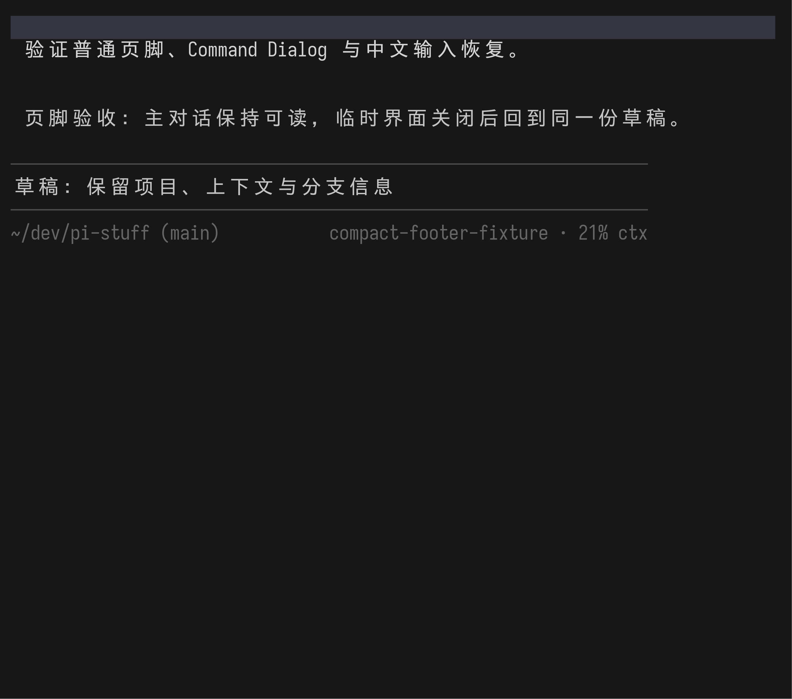
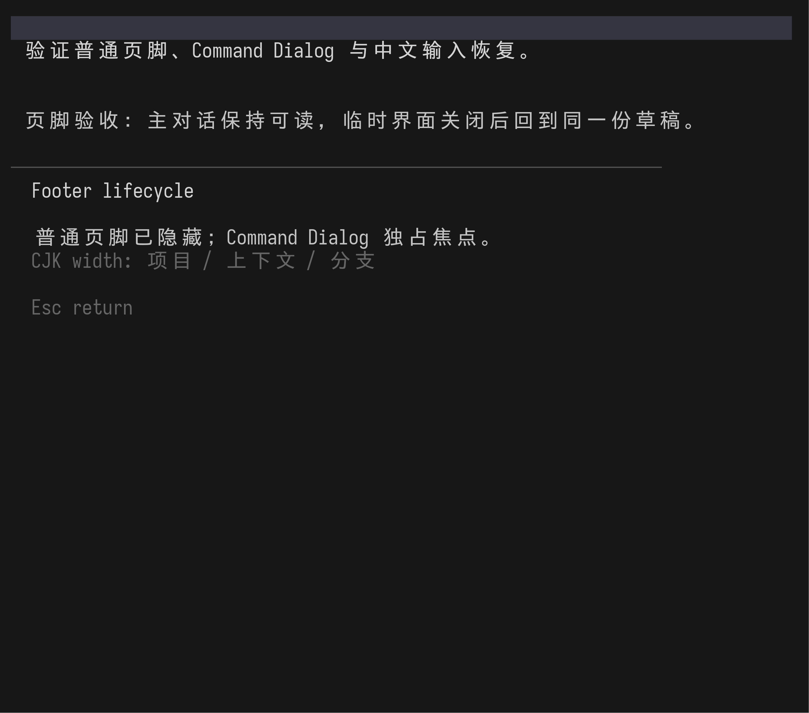

Captured from the production @jczhang02/pi-stuff-ui implementation in repository-pinned Pi
0.83.0 and Bun 1.3.14. The harness used isolated settings, a deterministic persisted
session, an offline fixture model, real tmux PTYs, and Freeze rendering. No browser mock or model request is
present in these terminal pixels.
Fixed 100 × 32

Normal — one row: project/branch left, model/context right.

Dialog — footer, working row, and editor draft are absent.Restored — the same compact footer and CJK draft return.
Fixed 64 × 28
Normal narrow — all primary fields fit on one terminal row.Dialog narrow — full-width, divider-led, non-floating focus surface.

Restored narrow — one footer row and exact CJK draft recovery.
Live 100 → 64 → 100 resize

Dialog after live shrink; CJK cell widths remain bounded.Esc at 64 columns restores the compact footer and original CJK draft.Live expansion back to 100 columns keeps the same state and alignment.
Assertions exercised by the capture script
The normal screen contains exactly one model-bearing footer row with project, main, model, and context.
Agent, Todo, Fleet, health, floating-box glyphs, footer text, and the editor draft are absent from the dialog.
Esc restores the same Suite footer contract and the byte-identical CJK draft at both fixed widths and after resize.
The public Pi API has no getter for arbitrary third-party footer or working-row writes; certification covers the
Suite-owned state described in the Package README.